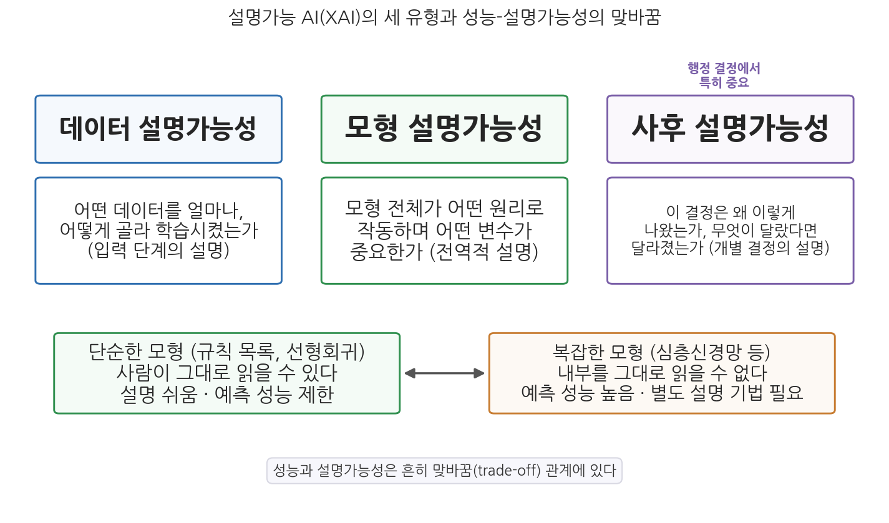
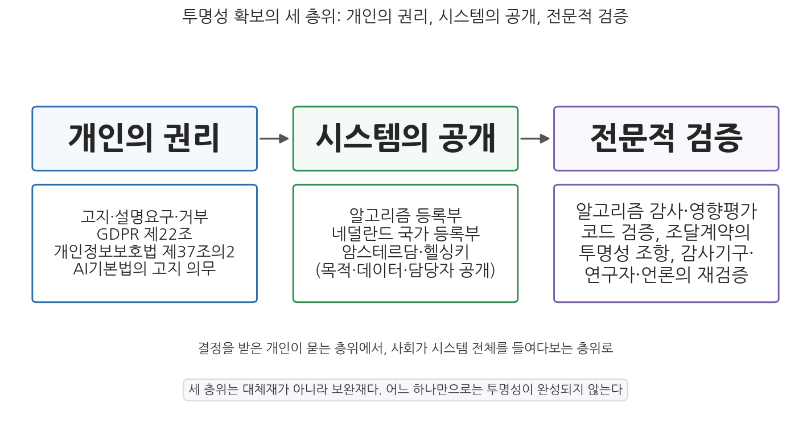

3주차 2차시. AI와 투명성 (2): 설명가능성과 제도
정보주체는 프로파일링을 포함하여 오로지 자동화된 처리에만 근거한 결정으로서 자신에게 법적 효과를 미치거나 이와 유사하게 중대한 영향을 미치는 결정의 적용을 받지 아니할 권리를 가진다. (EU 일반개인정보보호규정(GDPR) 제22조 제1항, 2016)
이 장에서 배우는 것
2025년 2월 27일, 유럽사법재판소(CJEU)에 오스트리아의 한 시민이 제기한 사건의 판결이 내려졌다. 사연은 사소해 보였다. 휴대전화 요금제 가입, 그것도 월 10유로짜리 계약을 거절당한 것이다. 이동통신사가 의뢰한 신용평가회사의 자동화된 평가가 그를 "지급 능력 없음"으로 분류했기 때문인데, 정작 그는 어떤 근거로 그런 판정이 나왔는지 알 수 없었다. 회사는 평가 알고리즘이 영업비밀이라며 설명을 거부했다. 시민은 물러서지 않았고, 오스트리아 법원을 거쳐 유럽 최고 법원까지 올라간 이 사건에서 재판소는 뜻깊은 답을 내놓았다. 자동화된 결정의 적용을 받은 사람은 그 결정이 어떤 절차와 원리로 내려졌는지 이해할 수 있는 설명을 받을 권리가 있으며, 영업비밀이라는 이유만으로 설명을 전면 거부할 수는 없다는 것이다.
1차시에서 우리는 문제를 진단했다. 알고리즘이 행정 결정에 개입하면 기술적, 법적, 조직적 원천에서 블랙박스가 만들어지고, 그 불투명성은 시민의 방어권과 정부 신뢰를 무너뜨린다. 이번 차시는 처방을 다룬다. 위의 판결처럼, 지난 10년 사이 세계 각국은 블랙박스를 열기 위한 기술과 법과 제도를 빠르게 발전시켜 왔다. 블랙박스 안을 들여다보는 기술인 설명가능 AI, 결정을 받은 개인이 "왜"라고 물을 수 있게 하는 설명요구권, 그리고 사회가 시스템 전체를 들여다보게 하는 알고리즘 등록부와 감사 제도가 그것이다. 구체적으로 다음을 배운다.
- 설명가능 AI(XAI)의 개념과 세 유형, 그리고 성능과 설명가능성의 상충
- 설명요구권의 법제화: GDPR과 유럽사법재판소 판례, 한국의 개인정보보호법·행정기본법·AI기본법
- 알고리즘 공개 논쟁: 공개 요구의 논리와 영업비밀·게이밍이라는 반론
- 투명성 확보의 제도 설계: 알고리즘 등록부, 조달계약, 감사와 사용자 중심 투명성
이 장은 하나의 질문을 따라 전개된다. "블랙박스를 열라는 요구는 기술과 법과 제도에서 각각 어떤 모습으로 실현되고 있으며, 어디까지 열 수 있는가?"
2.1 블랙박스 안을 들여다보는 기술, 설명가능 AI를 비전공자의 눈높이에서 이해한다 → 2.2 설명을 요구할 권리가 유럽과 한국에서 어떻게 법제화되었는지 본다 → 2.3 "알고리즘을 공개하라"는 요구를 둘러싼 찬반 논쟁을 따진다 → 2.4 알고리즘 등록부 등 투명성 확보의 제도 설계를 검토하고 4주차(책임성)로 넘어간다.
2.1 설명가능 AI(XAI): 블랙박스 안을 들여다보는 기술
설명가능성이라는 과제
1차시에서 본 것처럼, 성능 좋은 AI 모형의 판단 과정은 개발자조차 직관적으로 읽지 못한다. 그렇다고 "원래 그런 기술이니 설명은 포기하라"고 할 수는 없다. 행정에서 설명은 사치가 아니라 적법절차의 요건이기 때문이다. 그래서 등장한 것이 설명가능 인공지능(eXplainable Artificial Intelligence, XAI)이다. XAI는 AI 모형의 내부 작동 방식에 대한 이해를 바탕으로, 모형이 내리는 결정의 이유를 최종 사용자가 이해할 수 있는 형태로 전달하는 것을 목표로 하는 기술과 연구의 흐름이다. XAI는 AI의 결정에 영향을 받는 개인의 설명 요구에 응답할 수 있게 하고 다양한 이해관계자를 설득하는 데 효과적이라는 점에서 공공분야에 특히 유용하며, EU를 비롯한 여러 나라에서 AI 모형의 설명가능성을 요구하는 입법이 이루어지면서 그 중요성이 커졌다.
설명가능 AI(XAI)는 AI 모형이 내리는 결정의 이유를 사람이 이해할 수 있는 형태로 전달하려는 기술적 접근의 총칭이다. 여기서 "설명"의 수신자가 누구인가가 중요하다. 개발자에게 유용한 설명(모형 진단용)과 심사 담당 공무원에게 필요한 설명(업무 판단용), 결정을 통보받은 시민에게 필요한 설명(이의제기용)은 서로 다르다. 좋은 XAI는 청중에 맞는 설명을 제공하는 XAI다.
세 유형: 데이터, 모형, 사후 설명가능성
XAI는 사용 목적, 주요 이해관계자, 분석 방법에 따라 데이터 설명가능성, 모형 설명가능성, 사후 설명가능성의 세 유형으로 구분할 수 있다.

그림 3-3을 읽는 법은 이렇다. 위의 세 상자는 "무엇을 설명하는가"에 따른 XAI의 세 유형이고, 아래의 두 상자는 모형의 복잡성에 따라 설명의 난도가 달라지는 맞바꿈 관계를 보여 준다. 이 그림에서 알 수 있는 것은 설명가능성이 단일한 기술이 아니라 설명 대상과 모형 종류에 따라 달라지는 과제라는 점이다.
데이터 설명가능성은 입력 단계를 설명한다. 모형이 어떤 데이터를, 얼마나, 어떤 기준으로 골라 학습했는가. 1차시의 사례들이 보여 주듯 편향의 상당 부분은 데이터에서 오므로, 데이터의 출처와 구성을 밝히는 것은 설명의 출발점이다. 모형 설명가능성은 모형 전체의 작동 원리를 설명한다. 이 모형은 대체로 어떤 변수를 중시하는가, 각 변수는 예측에 어떤 방향으로 기여하는가 같은 전역적(global) 질문에 답한다. 마지막으로 사후 설명가능성(post-hoc explainability)은 이미 내려진 개별 결정을 사후에 설명한다. "이 신청자는 왜 거부되었는가", "무엇이 달랐다면 결과가 달라졌겠는가" 같은 개인 수준의 해석에 초점이 있으며, 개별 관측치의 조건 변화에 따른 예측 변화를 보여 주는 ICE 플롯(Individual Conditional Expectation plot) 같은 기법이 쓰인다(Goldstein et al., 2015).
행정과 정책 분야의 의사결정에서는 특히 사후 설명가능성이 중요하다. 이유는 간단하다. 행정 결정의 상대방인 시민이 요구하는 것은 모형 일반의 작동 원리가 아니라 "내 사건"의 설명이기 때문이다. 수당 신청이 거부된 시민에게 "이 모형은 전반적으로 소득과 가구 구성을 중시합니다"라는 전역적 설명은 공허하다. 필요한 것은 "귀하의 경우 최근 소득 신고 누락이 결정적이었으며, 그것이 보완되면 결과가 달라질 수 있습니다" 같은 개별적 설명이다.
사후 설명의 유력한 형태로 반사실적 설명(counterfactual explanation)이 있다. 모형 내부를 해부하는 대신 "입력이 어떻게 달랐다면 결과가 달라졌을지"를 알려 주는 방식이다. 예컨대 "연 소득이 300만 원 더 높았다면 대출이 승인되었을 것"이라는 설명은 알고리즘의 수식을 한 줄도 보여 주지 않지만, 결정을 받은 사람에게는 어떤 요인이 결정적이었고 무엇을 하면 결과를 바꿀 수 있는지를 알려 준다. 와히터와 동료들(Wachter, Mittelstadt, & Russell, 2018)은 반사실적 설명이 영업비밀을 침해하지 않으면서도 당사자에게 실질적으로 유용한 설명을 제공할 수 있다고 주장했다. 블랙박스를 다 열지 않고도 의미 있는 설명이 가능하다는 이 발상은, 뒤에서 볼 유럽사법재판소의 "간결하고 이해 가능한 설명" 기준과도 통한다. 물론 한계도 있다. 반사실적 설명은 개별 결정의 이유는 알려 주지만, 시스템 전체가 특정 집단에 편향되어 있는지는 알려 주지 못한다.
성능과 설명가능성의 맞바꿈, 그리고 반론
XAI를 이해할 때 피할 수 없는 것이 성능과 설명가능성의 상충이다. 사람이 그대로 읽을 수 있는 단순한 모형(규칙 목록, 선형회귀)은 설명이 쉽지만 복잡한 현실의 예측에서 성능이 제한되는 경우가 많고, 성능이 뛰어난 복잡한 모형(심층신경망 등)은 별도의 설명 기법 없이는 해석할 수 없다. 그래서 실무의 선택은 흔히 "성능 좋은 블랙박스에 사후 설명을 붙일 것인가, 성능을 조금 양보하고 처음부터 해석 가능한 모형을 쓸 것인가"의 문제가 된다.
이 선택에 관해 경청할 만한 반론이 있다. 기계학습 연구자 루딘(Rudin, 2019)은 개인의 삶을 좌우하는 고위험 결정에는 블랙박스에 사후 설명을 덧붙이는 방식 자체를 재고해야 한다고 주장한다. 사후 설명은 어디까지나 원래 모형에 대한 근사적 해설이어서 실제 판단 과정과 다를 수 있고, 그렇다면 설명이 오히려 그럴듯한 착시를 줄 위험이 있다는 것이다. 루딘은 표 형태의 행정 데이터를 다루는 많은 과제에서는 처음부터 해석 가능한 모형도 복잡한 모형에 크게 뒤지지 않는 성능을 낼 수 있다고 지적한다. 이 견해를 따르면 행정기관의 원칙은 "설명 기법을 확보했는가"가 아니라 "굳이 블랙박스를 써야 할 이유를 소명할 수 있는가"가 된다.
기술이 설명을 제공할 수 있다는 것과, 그 설명이 실제로 시민의 신뢰를 얻는다는 것은 별개의 문제다. 이 지점에서 행정학의 실증 연구가 등장한다. 그리멜리크하위전(Grimmelikhuijsen, 2023)은 실험 연구를 통해, 자동화된 결정에 대해 이유를 설명해 주는 것(설명가능성)이 결정의 신뢰성 인식을 높인다는 것을 보였다. 흥미로운 것은 비교 대상이다. 단순히 관련 정보에 접근할 수 있게 하는 것(접근성)보다, 왜 그런 결정이 나왔는지를 정당화하는 설명이 신뢰에 더 일관된 효과를 냈다. 1차시에서 본 투명성의 두 요소, 곧 공개와 이해가능성 중에서 후자가 관건이라는 이론적 논의가 실증적으로도 확인된 셈이다.
2.2 설명요구권과 정보공개
GDPR과 "설명을 요구할 권리" 논쟁
기술이 설명을 만들 수 있어도, 그것을 내놓게 하려면 법적 권리가 필요하다. 출발점은 EU가 2016년 채택해 2018년부터 시행한 일반개인정보보호규정(General Data Protection Regulation, GDPR)이다. 이 장 첫머리의 인용구가 그 핵심 조항이다. GDPR 제22조는 프로파일링을 포함해 오로지 자동화된 처리에만 근거한, 법적 효과나 그에 준하는 중대한 영향을 미치는 결정의 적용을 받지 않을 권리를 정보주체에게 부여하고, 예외적으로 그런 결정이 허용되는 경우에도 인적 개입을 요구하고 자신의 입장을 표명하며 결정에 이의를 제기할 권리를 보장한다. 또한 제13조에서 제15조는 자동화된 결정이 존재한다는 사실과 함께 "관련된 논리에 관한 의미 있는 정보(meaningful information about the logic involved)"를 정보주체에게 제공하도록 한다.
이 규정이 이른바 설명요구권(right to explanation)을 담고 있는지를 두고 학계에서 격렬한 논쟁이 벌어졌다. 조문 어디에도 "설명(explanation)"이라는 단어가 명시적 권리로 등장하지 않기 때문이다. 와히터와 동료들(Wachter et al., 2017)은 GDPR이 보장하는 것은 시스템 일반에 대한 사전 정보 제공일 뿐 개별 결정에 대한 사후 설명의 권리는 아니라고 주장했고, 반대편에서는 조문들의 취지를 종합하면 설명요구권이 도출된다는 해석(Goodman & Flaxman, 2017)이 맞섰다. 이 논쟁은 법 조문의 자구가 아니라 법원의 판결로 정리되게 되는데, 그것이 이 장 도입에서 소개한 2025년의 판결이다.
오스트리아의 한 시민이 신용평가회사 Dun & Bradstreet Austria의 자동화된 신용평가 때문에 월 10유로의 휴대전화 요금제 가입을 거절당하자, GDPR 제15조에 따라 평가에 사용된 논리에 관한 정보를 요구했다. 회사가 영업비밀을 이유로 거부하면서 시작된 소송에서, 유럽사법재판소는 2025년 2월 27일 다음과 같이 판결했다(C-203/22). 첫째, 정보주체는 자동화된 결정이 어떤 절차와 원리로 자신의 개인정보를 사용해 그 결과에 이르렀는지에 관한 "의미 있는 정보"를 받을 권리가 있으며, 이는 간결하고 이해하기 쉬운 설명이어야 한다. 복잡한 수학 공식(알고리즘 자체)을 건네주거나 결정 과정의 모든 단계를 상세히 나열하는 것으로는 이 요건을 충족하지 못한다. 둘째, 영업비밀 보호를 이유로 설명을 전면 거부할 수는 없다. 사업자가 영업비밀이 포함되어 있다고 주장하는 경우, 해당 정보를 감독기구나 법원에 제출하고 그 기관이 정보주체의 권리와 영업비밀 보호를 형량해 공개 범위를 정해야 한다.
이 판결이 보여 주는 것은 두 가지다. 첫째, 유럽 법질서에서 설명요구권 논쟁은 사실상 권리의 존재를 인정하는 쪽으로 정리되었다. 주목할 것은 법원이 요구한 설명의 수준이다. 알고리즘 수식의 공개가 아니라 "간결하고 이해 가능한 설명"이라는 기준은, 1차시에서 본 투명성 과부하의 통찰(정보를 쏟아내는 것은 투명성이 아니다)과 2.1절의 반사실적 설명 같은 접근이 법적으로도 유효한 경로임을 시사한다. 둘째, 영업비밀과 설명요구권의 충돌에 대해 제3자 기관의 형량이라는 절차적 해법을 제시했다. 1차시 COMPAS 사례에서 본 "영업비밀 앞에서 멈춰 선 검증"과 대조되는 지점이다.
한편 EU는 GDPR과 별도로 EU AI Act(인공지능법)를 2024년 제정해 위험 수준에 따라 AI 시스템을 규제하고 있으며, 여기에도 투명성 의무가 담겨 있다. 그 시행 경과는 2.4절에서 제도 설계의 맥락과 함께 본다.
한국의 제도: 세 갈래의 법제화
한국에서도 자동화된 결정에 대한 설명과 통제의 법제화가 최근 몇 년 사이 빠르게 진행되었다. 세 갈래를 구분해 보자.
첫째, 행정기본법 제20조(자동적 처분)다. 2021년 제정된 행정기본법은 행정청이 법률로 정하는 바에 따라 완전히 자동화된 시스템(AI 기술을 적용한 시스템을 포함한다)으로 처분을 할 수 있되, 처분에 재량이 있는 경우는 그러하지 아니하다고 규정했다. 자동화된 행정처분의 법적 근거를 마련하는 동시에, 재량 판단이 필요한 처분은 기계에 맡길 수 없다는 한계선을 그은 것이다.
둘째, 개인정보 보호법 제37조의2(자동화된 결정에 대한 정보주체의 권리)다. 2023년 개정으로 신설되어 2024년 3월 15일부터 시행된 이 조항은 한국판 설명요구권으로 불린다. 완전히 자동화된 시스템으로 개인정보를 처리하여 이루어지는 결정이 정보주체의 권리 또는 의무에 중대한 영향을 미치는 경우, 정보주체는 그 결정을 거부하거나 결정에 대한 설명 등을 요구할 수 있다. 신용대출 심사나 채용 서류의 AI 평가처럼 삶에 중대한 영향을 미치는 자동화된 결정이 적용 대상이다. 다만 정보주체의 사전 동의, 계약의 이행, 법률상 근거가 있는 경우에는 거부권이 제한되는 등 권리의 범위에는 한계가 있다.
셋째, AI기본법(인공지능 발전과 신뢰 기반 조성 등에 관한 기본법)이다. 2025년 1월 제정되어 2026년 1월 22일부터 시행령과 함께 시행된 이 법은 개별 결정의 설명보다 시스템 차원의 투명성 의무에 무게를 둔다. 자세한 내용은 2.4절의 사례 박스에서 본다.
여기에 전통적 제도인 정보공개법(공공기관의 정보공개에 관한 법률)이 있다. 시민은 공공기관이 보유한 정보의 공개를 청구할 수 있고, 이는 행정기관이 도입한 알고리즘 관련 문서에도 적용될 수 있다. 그러나 법인의 경영상·영업상 비밀 등은 비공개 사유가 될 수 있어, 민간 개발 시스템의 핵심 정보 앞에서는 1차시에서 본 법적 원천의 장벽이 다시 나타난다. 결국 개인의 설명요구권이든 정보공개청구든, "어디까지 공개해야 하는가"라는 다음 절의 논쟁을 피해 갈 수 없다.
2.3 알고리즘 공개 논쟁
공개를 요구하는 논리: 검증가능성
알고리즘 공개(open algorithms)를 요구하는 쪽의 핵심 논리는 검증가능성이다. AI 시스템의 코드나 의사결정 규칙을 공개하면 독립적인 전문가와 감사기구가 알고리즘을 검토하고 그 신뢰성을 검증할 수 있다. 어떤 도시가 건물 화재 위험을 예측하는 AI 모형을 쓴다면, 공개된 코드를 통해 외부 전문가들이 그 타당성을 재검토할 수 있는 식이다.
검증가능성이 왜 결정적인지는 1차시의 COMPAS 논쟁이 잘 보여 준다. 프로퍼블리카는 COMPAS가 흑인 피고인에게 불리하다고 분석했지만, 인종 간 큰 차이가 없다는 반대 분석도 존재한다. 어떻게 같은 도구를 두고 상반된 결론이 나오는가. 두 분석은 모형의 성능과 공정성을 판단하는 기준 자체가 달랐다. 한쪽은 "재범하지 않을 사람을 고위험으로 잘못 분류하는 비율이 인종 간에 다르다"는 점을, 다른 쪽은 "같은 위험 점수를 받은 사람들의 실제 재범률은 인종과 무관하게 비슷하다"는 점을 보았고, 수학적으로 두 기준은 동시에 완벽하게 충족되기 어렵다는 것이 이후 밝혀졌다(공정성 기준들의 상충은 5주차에서 본격적으로 다룬다). 여기서 중요한 함의는 이것이다. 결과에 대한 판단이 어떤 기준을 쓰느냐에 따라 달라질 수 있다면, 결과 수치 몇 개의 공개로는 부족하고 알고리즘과 데이터, 과정 전체를 열어 다양한 기준으로 검증(감사)할 수 있어야 한다. 공개는 그 전제조건이다.
공개에 반대하는 논리: 영업비밀과 게이밍
반대편의 논리는 두 갈래다. 첫째는 앞서 본 영업비밀이다. 알고리즘 개발에는 상당한 투자가 들어가며, 강제 공개는 지식재산을 침해하고 민간의 개발 유인을 꺾는다는 주장이다. 다만 이 논리는 2025년 유럽사법재판소 판결이 보여 주듯 절대적 방패로는 인정받지 못하는 추세다. 영업비밀 보호와 설명 제공은 양자택일이 아니라 형량과 절충의 문제로 다루어지고 있다.
둘째는 게이밍(gaming), 곧 시스템 악용의 위험이다. 부정수급 탐지 AI의 판정 규칙이 상세히 공개되면, 부정을 저지르려는 사람이 그 규칙을 역이용해 탐지를 피해 갈 수 있다. 세무조사 대상 선정 기준이 공개되면 탈세 수법이 그 기준을 우회하도록 진화한다. 이 위험은 실재하며, 투명성이 지나치면 악용 가능성이 커진다는 지적은 공개 범위를 정할 때 반드시 고려해야 할 요소다.
게이밍 논거는 강력하지만 만능 면책 사유는 아니다. 첫째, 모든 알고리즘이 게이밍에 취약한 것은 아니다. 조작할 수 없는 변수(연령, 과거 이력)에 주로 의존하는 시스템은 규칙이 공개되어도 우회가 어렵다. 둘째, 게이밍 우려가 있는 경우에도 선택지는 "전면 공개 대 전면 비공개"가 아니다. 일반에는 시스템의 목적과 개요를 공개하고, 세부 규칙은 비밀유지 의무를 지는 감사기구와 전문가에게만 열어 검증하게 하는 단계적 공개가 가능하다. 게이밍 논거가 검증 회피의 구실로 쓰이고 있지는 않은지 따져 보는 것이 이 논쟁을 읽는 요령이다.
논쟁의 재구성: 무엇을 누구에게 공개할 것인가
공개 논쟁을 한 걸음 물러서서 보면, "공개하라 대 못 한다"의 이분법 자체가 부정확하다는 것을 알 수 있다. 진짜 질문은 무엇을, 누구에게, 어떤 형태로 공개할 것인가다.
우선 소스코드 전면 공개가 곧 투명성인 것은 아니다. 1차시에서 본 것처럼 기계학습 시스템의 판단은 코드보다 학습 데이터에 좌우되는 부분이 크므로, 코드만 공개하는 것은 절반의 공개다. 거꾸로 AI 모형의 기술 문서를 통째로 공개한들 일반 시민이 그것을 이해할 수 있는가라는 문제도 있다. 투명성이란 단순히 정보를 공개하는 것이 아니라 시민이 이를 이해하고 활용할 수 있어야 의미가 있다. 그래서 AI 투명성 정책은 일반 시민이 이해할 수 있는 직관적 설명을 제공하는 사용자 중심 투명성(usable transparency)을 기반으로, 정보 공개와 시스템 보호 사이의 균형을 유지해야 한다. 청중에 따라 다른 층위의 공개를 설계하는 것, 곧 시민에게는 이해 가능한 설명을, 전문 감사기구에는 검증 가능한 세부를, 악용 우려가 있는 세부 규칙에는 통제된 접근을 제공하는 다층적 설계가 논쟁의 현실적 착지점이다. 이것이 마지막 절의 주제, 제도 설계다.
2.4 투명성 확보의 제도 설계
세 층위의 제도
지금까지의 논의를 종합하면, 알고리즘 투명성의 제도는 세 층위로 설계된다.

그림 3-4를 읽는 법은 이렇다. 왼쪽에서 오른쪽으로 갈수록 투명성의 주체가 결정을 받은 개인에서 사회 전체로 넓어진다. 이 그림에서 알 수 있는 것은 세 층위가 대체재가 아니라 보완재라는 점이다. 개인의 설명요구권(2.2절)이 있어도 시스템의 존재 자체를 모르면 권리를 행사할 수 없고, 등록부로 존재가 공개되어도 전문적 검증이 없으면 공개된 정보의 진위를 확인할 수 없다.
첫째 층위인 개인의 권리는 2.2절에서 보았다. 둘째 층위가 이 절의 주인공인 알고리즘 등록부(algorithm register)다. 정부가 사용하는 자동화된 의사결정 시스템의 목록을 만들어, 각 알고리즘의 목적, 사용하는 데이터, 활용 부서와 담당 연락처 등을 시민에게 공개하는 제도다. 개별 알고리즘의 내부를 여는 것이 아니라 "정부가 어디서 무엇을 자동화하고 있는지"라는 지도를 제공하는 것으로, 시민이 설명요구권을 행사하고 언론과 연구자가 검증 대상을 특정할 수 있게 하는 기반 시설이다.
2020년 9월 암스테르담과 헬싱키 두 도시는 세계 최초로 시 정부의 AI 등록부를 나란히 공개했다. 시가 사용하는 알고리즘마다 목적, 사용 데이터, 작동 방식의 개요, 인간 감독의 방식, 문제 발생 시 연락할 담당 부서를 시민이 읽을 수 있는 언어로 게시한 것이다. 이 실험은 국가 수준으로 확장되었다. 1차시에서 본 아동수당 사건의 후폭풍 속에서 네덜란드 정부는 2022년 12월 국가 알고리즘 등록부(algoritmes.overheid.nl)를 개설해 중앙부처, 지방정부, 집행기관이 쓰는 알고리즘의 등록을 진행해 왔고, 2026년 7월 현재 약 1,500건의 알고리즘 설명이 등록되어 있다. 각 항목은 알고리즘의 목적과 법적 근거, 사용 데이터, 인간 개입 여부, 위험과 통제 장치를 담는다. 등록부는 만능이 아니다. 등록은 기관의 협조에 의존하고, 설명의 깊이는 항목마다 고르지 않으며, 등록되었다고 해서 알고리즘이 검증되었다는 뜻도 아니다. 그러나 "정부가 어디서 알고리즘을 쓰는지"를 묻는 데 공식 지도가 존재하는 나라와 그렇지 않은 나라의 차이는 작지 않다.
이 사례가 보여 주는 것은 투명성 제도가 사고의 산물이라는 점이다. 네덜란드가 국가 등록부에 가장 적극적인 나라가 된 것은 우연이 아니라 SyRI 판결과 아동수당 사건이라는 값비싼 수업료의 결과다. 또한 등록부는 1차시에서 본 조직적 원천에 대한 처방이기도 하다. 등록 항목을 채우려면 기관 스스로 자신이 쓰는 시스템의 목적, 데이터, 한계를 문서화해야 하므로, 등록부는 대외 공개 장치인 동시에 조직 내부의 지식과 책임 소재를 정비하는 장치가 된다.
셋째 층위는 전문적 검증이다. 몇 가지 도구가 있다. 조달 단계에서는 AI 도입 계약에 투명성 조항을 명시해, 납품 기업이 영업비밀을 이유로 감사와 설명을 거부할 수 없도록 사전에 못 박는 방식이 쓰인다. 일부 정부는 핵심 시스템을 외부 조달 대신 직접 개발하는 길을 택하기도 한다. 운영 단계에서는 알고리즘 감사(algorithm audit), 곧 감사기구나 독립 전문가가 시스템의 성능과 편향을 재검증하는 장치가 발전하고 있으며, 도입 전에 위험을 심사하는 AI 영향평가는 9주차에서 자세히 다룬다. 언론과 연구자의 역할도 이 층위에 속한다. 1차시의 사례들이 보여 주듯, COMPAS의 편향 논쟁을 연 것도(프로퍼블리카) 로테르담시의 부정수급 위험점수 모형이 여성과 이민자에게 불리하게 작동함을 밝혀 시가 사용을 중단하게 만든 것도(2023년 라이트하우스 리포츠와 WIRED의 공동 탐사보도) 독립적인 외부 검증이었다.
법제도의 현재: EU와 한국, 2026년
제도 설계의 큰 틀은 이제 입법으로 수렴하고 있다. 2026년 시점의 현황을 정리하자.
EU AI Act는 2024년 발효 후 단계적으로 적용되어 왔다. 금지 대상 AI에 관한 조항은 2025년 2월부터, 범용 AI 모형에 관한 의무는 2025년 8월부터 적용되었고, AI와 상호작용하고 있음을 이용자에게 알리는 등의 투명성 의무(제50조)는 2026년 8월 2일부터 적용된다. 다만 고위험 AI 시스템에 대한 본격적 의무는 일정이 늦춰졌다. 집행위원회가 2025년 11월 제안한 디지털 옴니버스(Digital Omnibus) 패키지에 따라, EU 이사회와 유럽의회는 2026년 5월 7일 고위험 AI 의무의 적용 시점을 당초의 2026년 8월에서 2027년 12월로 연기하는 데 잠정 합의했다. 규제 완화 압력과 준비 부족(표준·감독기구 정비 지연)이 배경으로, 세계에서 가장 야심적인 AI 규제조차 시행의 문턱에서 속도 조절을 겪고 있음을 보여 준다(EU AI Act의 구조와 논쟁은 11주차의 주제다).
한국은 2026년 1월 22일 AI기본법 시행으로 아시아에서 앞서 포괄적 AI 법제를 가동한 나라가 되었다.
2026년 1월 22일 시행된 AI기본법은 제31조에서 AI 사업자의 투명성 확보 의무를 규정한다. 골자는 셋이다. 첫째, 고영향 AI(사람의 생명·안전·기본권에 중대한 영향을 미치는 영역의 AI)나 생성형 AI를 이용한 제품·서비스를 제공하려는 경우, 그것이 해당 AI에 기반해 운용된다는 사실을 이용자에게 사전에 고지해야 한다. 둘째, 생성형 AI의 결과물에는 AI가 생성했다는 사실을 표시해야 한다. 셋째, 실제와 구분하기 어려운 가상의 음향·이미지·영상(딥페이크)은 이용자가 명확히 인식할 수 있는 방식으로 고지 또는 표시해야 한다. 위반 시 3천만 원 이하의 과태료가 부과된다. 과학기술정보통신부는 시행에 맞춰 「인공지능 투명성 확보 가이드라인」(2026년 1월)을 공개해 고지·표시의 구체적 방법을 안내했으며, 시행 초기 혼란을 줄이기 위해 1년 이상 과태료 부과를 유예하는 계도 중심의 운영 방침을 밝혔다.
이 제도가 보여 주는 것은 투명성 규제의 한국적 출발점이다. AI기본법의 투명성 의무는 "AI가 쓰였다는 사실"의 고지에 초점이 있다. 이는 시민이 자동화된 결정의 존재 자체를 모르는 상태를 없앤다는 점에서 그림 3-4의 첫째 층위(개인의 권리)의 기초 공사에 해당한다. 반면 개별 결정의 이유를 설명할 의무나 공공부문 알고리즘의 체계적 공개(등록부) 같은 둘째, 셋째 층위는 아직 개인정보 보호법 제37조의2와 개별 기관의 실무에 맡겨져 있다. 사전 고지에서 출발해 설명과 검증으로 나아가는 과제가 남아 있는 셈이다.
남는 질문: 투명해지면 충분한가
이 주를 마치며 한 가지를 짚어 두자. 투명성은 필요조건이지 충분조건이 아니다. 알고리즘의 작동이 낱낱이 공개되고 설명이 제공되어도, 그 결정이 잘못되었을 때 누가 책임지는가는 별개의 문제로 남는다. 결정을 내린 것은 알고리즘인데 알고리즘은 책임의 주체가 될 수 없고, 공무원은 "시스템을 따랐을 뿐"이라 말하고, 개발사는 "운용은 정부가 했다"고 말한다면. 투명성이 열어 놓은 이 질문, 곧 AI 시대의 책임성 문제가 4주차의 주제다.
요약
설명가능 AI(XAI)는 AI 모형이 내리는 결정의 이유를 사람이 이해할 수 있는 형태로 전달하려는 기술적 접근으로, 데이터·모형·사후 설명가능성의 세 유형으로 나뉘며 행정에서는 개별 결정을 설명하는 사후 설명가능성이 특히 중요하다. 성능과 설명가능성은 흔히 맞바꿈 관계에 있으나, 고위험 결정에는 처음부터 해석 가능한 모형을 써야 한다는 반론(Rudin, 2019)도 유력하다. 실증 연구는 결정의 이유를 정당화하는 설명이 자동화된 결정의 신뢰성 인식을 높인다는 것을 보여 준다(Grimmelikhuijsen, 2023). 설명을 요구할 권리는 GDPR 제22조와 제13조에서 제15조를 둘러싼 학술 논쟁을 거쳐, 2025년 유럽사법재판소 판결(C-203/22)로 "간결하고 이해 가능한 설명"을 받을 권리로 정리되었고, 영업비밀은 전면 거부의 사유가 아니라 형량의 대상이 되었다. 한국은 행정기본법 제20조(자동적 처분), 개인정보 보호법 제37조의2(자동화된 결정에 대한 거부·설명요구권, 2024년 시행), AI기본법 제31조(고지·표시 의무, 2026년 1월 시행)로 이어지는 법제를 갖추었다. 알고리즘 공개 논쟁은 검증가능성의 요구와 영업비밀·게이밍의 반론이 맞서지만, 현실적 착지점은 청중별로 공개의 층위를 달리하는 사용자 중심 투명성의 설계다. 제도 설계는 개인의 권리, 시스템의 공개(암스테르담·헬싱키의 AI 등록부, 네덜란드 국가 등록부), 전문적 검증(조달계약의 투명성 조항, 알고리즘 감사, 언론·연구자의 재검증)의 세 층위가 보완재로 작동할 때 완성된다. 다만 투명성은 필요조건일 뿐이며, 설명된 결정의 책임을 누가 지는가라는 질문은 4주차의 책임성 논의로 이어진다.
토론·복습 문제
3-5. (서술형 연습) 설명가능 AI의 세 유형(데이터·모형·사후 설명가능성)을 설명하고, 행정 결정의 맥락에서 사후 설명가능성이 특히 중요한 이유를 논의하시오. 또한 블랙박스 모형에 사후 설명을 붙이는 접근에 대한 루딘(Rudin, 2019)의 비판을 소개하고 자신의 견해를 밝히시오.
3-6. (찬반 토론) "공공기관이 사용하는 모든 알고리즘의 소스코드와 학습 데이터는 전면 공개되어야 한다." 이 주장에 찬성하는가, 반대하는가. 검증가능성, 영업비밀, 게이밍, 사용자 중심 투명성의 개념을 사용해 자신의 입장을 옹호하고, 반대 입장의 가장 강한 논거에 응답하시오.
3-7. 2025년 유럽사법재판소 판결(C-203/22)이 제시한 설명의 기준("간결하고 이해 가능한 설명", 영업비밀의 형량)을 정리하고, 이 기준을 1차시에서 본 COMPAS 사례에 적용하면 결론이 어떻게 달라졌을지 추론해 보시오.
3-8. 한국의 개인정보 보호법 제37조의2와 AI기본법 제31조를 그림 3-4의 세 층위에 비추어 평가하시오. 현행 한국 법제에서 상대적으로 취약한 층위는 어디이며, 이를 보완하기 위해 어떤 제도(예: 공공부문 알고리즘 등록부)를 어떤 순서로 도입하는 것이 좋겠는가.